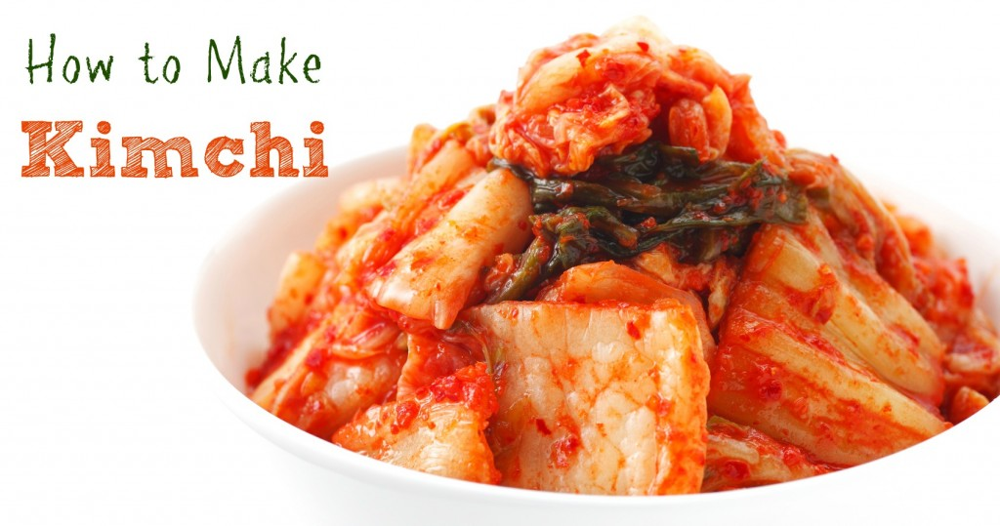

How To Make Easy Kimchi at Home

Equipment
Makes 1 quart
- Cutting board and knife
- Large bowl
- Gloves (optional but highly recommended)
- Plate and something to weigh the kimchi down, like a jar or can of
beans
- Colander
- Clean 1-quart jar with canning lid or plastic lid
- Bowl or plate to place under jar during fermentation
Ingredients
- 1 medium head napa cabbage (about 2 pounds)
- 1/4 cup sea salt or kosher salt (see Recipe Notes)
- Water, preferably distilled or filtered
- 1 tablespoon grated garlic (5 to 6 cloves)
Instructions
- Cut the cabbage. Cut the cabbage lengthwise through the stem into quarters.
Cut the cores from each piece. Cut each quarter crosswise into 2-inch-wide
strips.
- Salt the cabbage. Place the cabbage in a large bowl and sprinkle with the
salt. Using your hands, massage the salt into the cabbage until it starts to
soften a bit. Add enough water to cover the cabbage. Put a plate on top of the
cabbage and weigh it down with something heavy, like a jar or can of beans. Let
stand for 1 to 2 hours.
- Rinse and drain the cabbage. Rinse the cabbage under cold water 3 times.
Set aside to drain in a colander for 15 to 20 minutes. Meanwhile, make the
spice paste.